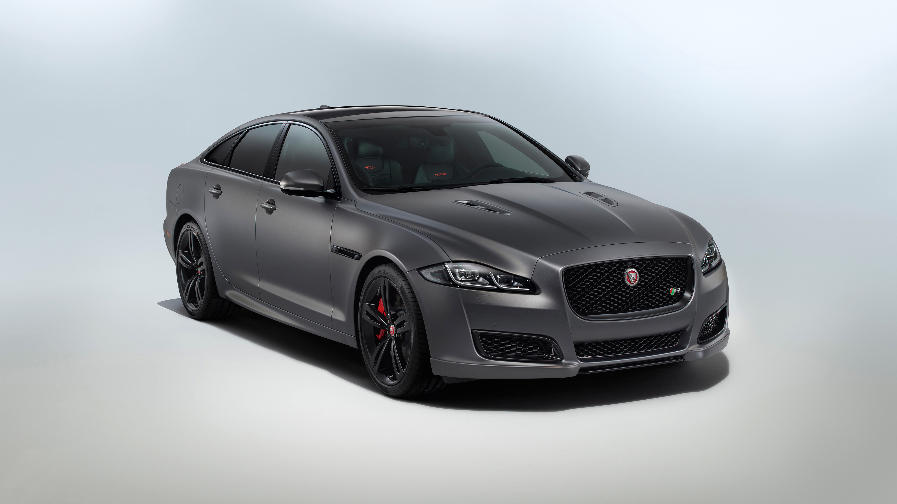
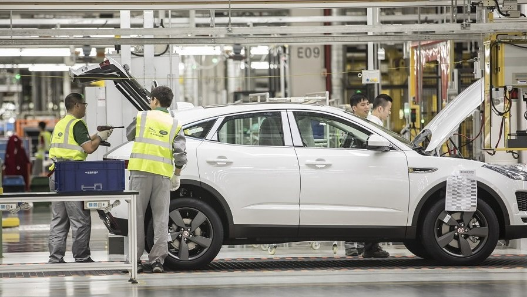

POUZDANOST JAGUARA
Kompanija Jaguar ulaže najveće napore i istinski je posvećena proizvodnji najbezbednijih, najpouzdanijih salonaca, sportskih i SUV automobila, automobila koji odišu luksuzom koji stvara zavisnost,uz nadmoćan kapacitet performansi.Od prve skice dizajnerove olovke i fino podešenih izračunavanja, preko hiljada kilometara virtuelnog, laboratorijskog i stvarnog testiranja, pa sve do proizvodnje, montaže i isporuke naših vozila - kvalitet i pouzdanost su ugrađeni u sve što radimo.
"U SRCU KOMPANIJE JAGUAR LAND ROVER LEŽI NAJMODERRNIJI INŽENJERING. ON JE KLJUČAN U PRUŽANJU KLIJENTIMA VISOKO OP?REEMLHJENA VOZILА, U PRIREĐIVANJU ISKUSTAVA KOJA BUDE LJUBAV ZA CEO ŽIVOT."
ELEKTRIFIKACIJA
ONO ŠTO NAUČIMO U NAŠIM TEST LABORATORIJIMA, DONOSIMO NA DRUM U SVOJIM VOZILIMA
Razvoj prve generacije električnih drumskih vozila iz Jaguara crpio je inspiraciju za aktivnosti našeg trkačkog tima. Uzimanje onoga što smo naučili na stazi i prilagođavanje tih tehnologija za postizanje elektrificirajućih performansi na putu bilo je naše obećanje od samog početka. Našim ulaskom u ABB FIA Formulu E Championship i sada stvaranjem Jaguar I-PACE eTROPHY Prvenstva, to obećanje oživljavamo.
DIZAJN
Sa Velikom Britanijom koja je žarište kreativnosti, naša strast prema dizajnu i inovacijama izgleda vrlo britanska i veoma aktuelna. Ipak angažovanje estetskih čula oduvek je bilo ključno za naš etos. Toliko toga, da je naš model iz 1960. godine i dalje redovno izglasan za najlepši automobil ikada.Naša vizija je ipak šira. Stvaramo i sarađujemo u mnogim različitim oblastima i aktivno podržavamo nove talente. Ovde u Jaguar Dizajnerskom prostoru, mi ćemo vam dati uvid u ono što radimo, dok to radimo. Dobar dizajn uvek treba da ispriča ubedljivu priču.
KVALITET, POUZDANOST & BEZBEDNOST
Automobili Jaguar izgrađeni su na našim najsavremenijim proizvodnim linijama u gradu Bromvich. To je mesto upečatljivog zanata, gde stotine visokotehnoloških robota i mašina od više miliona funti rade u savršenoj sinhronizaciji sa hiljadama visoko kvalifikovanih radnika. Grant McPherson, direktor operacija, zadužehn je da osigura da je svaki automobil savršen "Jaguar se oduvek zalagao za izvrsnost u inženjerstvu i lep dizajn, "kaže Grant," naša uloga je da svaki put ispunimo namere dizajnera svakog automobila. Naš je posao da postignemo stroge specifikacije, a za mene je kvalitet sposobnost da više puta postignemo tu specifikaciju. To je obraćanje pažnje na detalje koje ovde ulažemo. Pravimo luksuzne automobile."
Jedinstveni automobili, proizvedeni na zahtev
Svaki Jaguar napravljen je po narudžbi, tako da svaki automobil na proizvodnoj liniji već ima vlasnika koji ga čeka. A ta činjenica podupire aguar-ov neverovatni proizvodni process. "Radi se o iznenađenju i zadovoljstvu, kaže Grant, „želim da svaki vozač prvi put uđe u svoj novi Jaguar i da to bude predivno iskustvo. Želimo da nadmašimo očekivanja kupaca. Jaguar ima fantastične proizvode sa ikoničnim dizajnom, a mi ozbiljno govorimo o našim disciplinama."
End-to-End kvalitet
U praksi, ova pažnja na detalje znači da se svaki automobil neprestano promatra tokom proizvodnje. Na primer, tokom proizvodnje svakog XJ-a - od njegovog početka do trenutka kada se XJ kotrljaju sa konačne montažne linije kao luksuzno vozilo - proći će hiljade preciznih procesa i provera kvaliteta. U retkim prilikama automobil nije savršen, ne nastavlja se sve dok problem ne bude otklonjen, proveren, dvostruko proveren i smatran savršenim..
 "Sve je u tome da svi budemo potpuno usredsređeni na ono što radimo ovde.
Mi pravimo premium automobile, pravimo Jaguare."